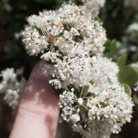
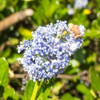

ceanothus
Ceanothus spp.
Distinguishing features:
- twig color, whether twigs are ridged
- leaves opposite or alternate
- leaf top warty or hairy or not
- leaf bottom hairy or not
- number of ribs from base of leaf
- inflorescence shape
Flower color is not a good diagnostic.
All leaves are dark green or dull green adaxially (on the upper surface) and paler abaxially (on the lower surface).
 buckbrush
- Twigs: generally brown to gray-brown, no more than slightly fuzzy
- Leaves:
- opposite, occasionally clustered
- 6–30 mm, 3–18 mm wide
- adaxially glabrous
- abaxially glabrous or with short stiff adpressed hairs, 1-ribbed from base
- margin entire or teeth ± sharp (not glandular)
- Inflorescence: umbel-like (flowers from a single point)
- Flower: white, pale blue, blue, or lavender
 wartleaf ceanothus
wartleaf ceanothus
- Twigs: green to gray-brown
- Leaves:
- alternate
- 11–50 mm, 6–15 mm wide
- adaxially glandular-papillate (warty)
- abaxially generally densely hairy, 1-ribbed from base
- margin rolled under, minutely gland-toothed, teeth 17–31
- Inflorescence: raceme-like (flowers from pedicels along axis)
- Flower: deep blue
 blueblossom
- Twigs: green, ridged, angled distally, glabrous
- Leaves:
- alternate
- 10–39 mm, 5–20 mm wide
- adaxially glabrous
- abaxially glabrous to puberulent between veins or not, 3-ribbed from base, veins ± raised, sparsely puberulent
- margin may be gland-toothed
- Inflorescence: generally raceme-like (flowers from pedicels along axis) or panicle-like (branched raceme)
- Flower: usually light to deep blue, but may be white
 hairy ceanothus
hairy ceanothus
- Twigs: green to reddish, not ridged or angled, may be hairy
- Leaves:
- alternate
- 11–30 mm, 5–25 mm wide
- adaxially ± glabrous to short-hairy
- abaxially sparsely to densely short-hairy, especially veins, 3-ribbed from base
- margin minutely gland-toothed, teeth 20–70
- Inflorescence: generally raceme-like (flowers from pedicels along axis)
- Flower: blue to purple-blue (or pale blue or white)
Other ceanothus
Pages that link to this one:
blue flowers
white flowers
all flowers
BAFG – Copyright 2019 Chris Nelson
 wartleaf ceanothus
wartleaf ceanothus

{kind=link}
{kind=link}